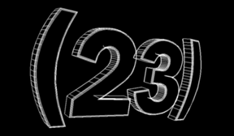

__. __. __. __. __. __. __. (23) __. __.
|  |
. . . |
| past_tense |
(23) began as an open-ended offshoot of the 21/22 corporation. using the (23) concept, ele_mental has organized events such as the multi-media performance SPHERE in 1995, where collage-like images were shown on a rear projector, accompanied by an electronic music score. SENSE, on 1 december 95, was a basement-style house party that incorporated live computer graphics, electronic music, and film. on 9 may 1997, (23) created a room for an event entitled (PHYLOS), creating an environment from various sound sources, including a light-sensitive interactive video/sound installation. (23) may yet coagulate again... |